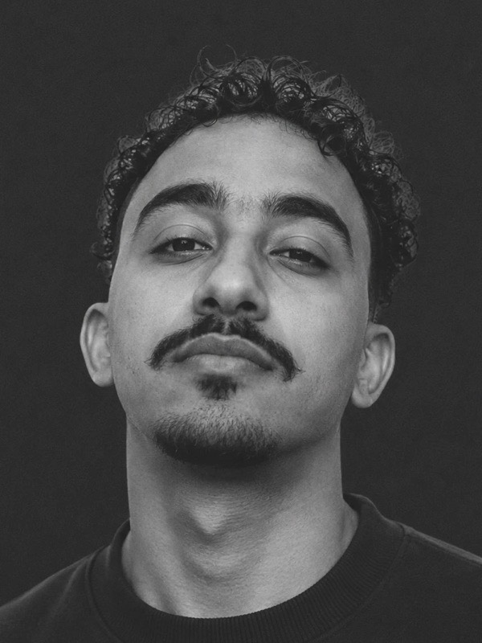

ود القبلان
قارئة رئيسيةكاتبة سيناريو، منتجة تطوير، وقائدة عمل (showrunner) تهتم بالمحتوى المرئي ومدى تأثيره عاطفيًا على الجمهور. تقرأ النصوص بعينٍ تبحث عما ينجح في القصة، وما يمكن تطويره، وأين تكمن قوتها سرديًا

الفريق
يقرأ نصك صانع أفلام أو كاتب سيناريو، بالمعايير نفسها التي تُقرأ بها المشاريع في غرف التطوير، ويكتب لك أين تكمن قوة نصك وما الذي يحتاج تطويرًا
فريق القرّاء
ومنتج تطوير إبداعي يتولّى المشاريع بعد التوصية
كاتبة سيناريو، منتجة تطوير، وقائدة عمل (showrunner) تهتم بالمحتوى المرئي ومدى تأثيره عاطفيًا على الجمهور. تقرأ النصوص بعينٍ تبحث عما ينجح في القصة، وما يمكن تطويره، وأين تكمن قوتها سرديًا
مخرج سينمائي بخبرة تتجاوز 15 عامًا في السينما والتلفزيون، حاصل على ماجستير في الكتابة والإنتاج السينمائي الدوليين من ميلانو. يقود مرحلة التطوير مع الكاتب والمخرج، ثم يقدّم المشروع لجهات الإنتاج بالشكل الذي تقرأ به هذه الجهات المشاريع

كاتب سيناريو وطالب ماجستير في كتابة السيناريو، بدأ مسيرته عام 2018 وتنقّل بين الأفلام الطويلة والقصيرة والمسلسلات والأنميشن والوثائقي. شارك في كتابة فيلم «عبد» الحائز على ثلاث جوائز في مهرجان أفلام السعودية، ويعمل في استوديو صلة

كاتبة سيناريو متخصصة في الدراما النفسية والاجتماعية. تضم أعمالها مشاريع حائزة على جوائز عُرضت في مهرجانات ومنصات دولية، مع خبرة في تطوير أفلام ومسلسلات ترتكز على الشخصيات والعمق الإنساني

متخصصة في السينما والفنون الأدائية، بخبرة في كتابة السيناريو والإنتاج الإبداعي والسرد البصري. تركّز في قراءاتها على بناء القصة، واللغة البصرية، والأثر العاطفي للنص
ما الذي يصلك